Chapter 6 · Part 1 — High Jump
“Who is that?” said Jack.
“I don’t know,” said Annie. “But we’ll soon find out!” She started waving.
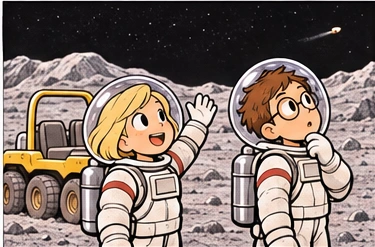
“No!” said Jack. He her arm. “Let’s go back to the base—before he gets here!”
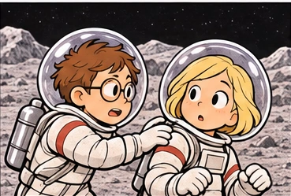
“Why?” said Annie.
“We don’t know who he is!” said Jack. “We don’t know if he’s friendly or mean or what.”
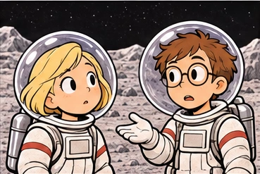
“But we can’t go back,” said Annie. “We haven’t found the fourth M thing yet. We won’t be able to go home.”
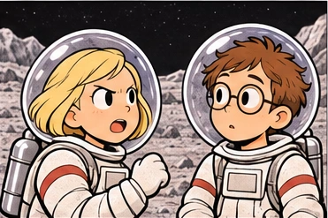
“It doesn’t matter. We can lock the door at the moon base until he goes away,” said Jack. “Then we can get new air !”
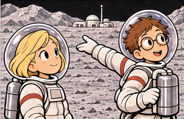
Jack hurried to the moon buggy. “Come on!” He jumped into the driver’s seat.
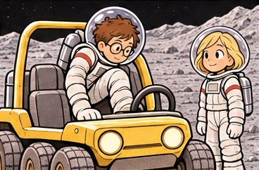
Annie gave a little wave to the dot in the sky. Then she climbed into the moon buggy.
The buggy took off.
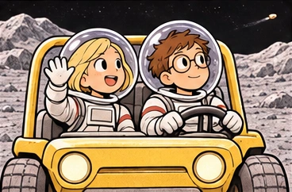
“Careful!” said Annie.
They bumped over the rocks as Jack turned the buggy around. Then they zoomed toward the pass.
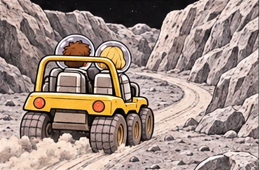
Jack around and rocks. More than once the buggy nearly tipped over.
“Whoa! Slow down!” said Annie.
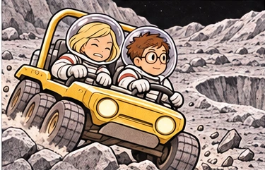
They were almost at the mountain pass. Suddenly, a cloud of dust flew up in front of them. The ground trembled.
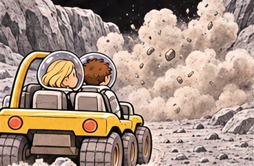
“Watch it!” cried Annie.
Jack couldn’t see a thing.
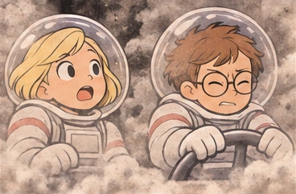
He stepped on the brake. The buggy jerked to a stop.
The dust settled.
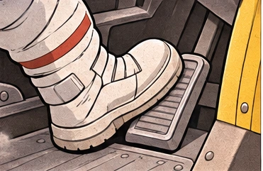
A giant rock had fallen into the pass. It was stuck between two walls of rock. They were !
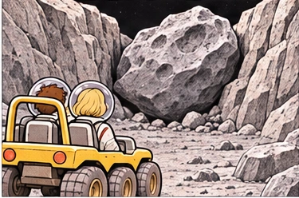
Jack quickly found a picture of a giant rock in the moon book. He read aloud:
Rocks of all sizes crash into the moon from outer space. These rocks are called meteorites.
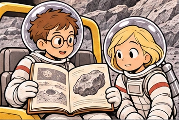
“We’re lucky that didn’t land on us,” said Jack.
“Yeah, and I guess it’s too big to be the M thing,” said Annie. She had climbed out of the moon buggy and was standing by the .
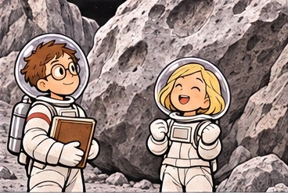
It was more than twice as tall as she was.
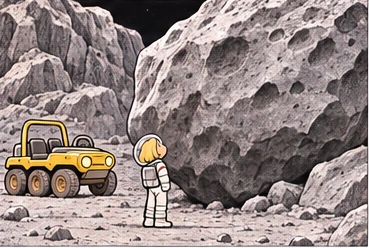